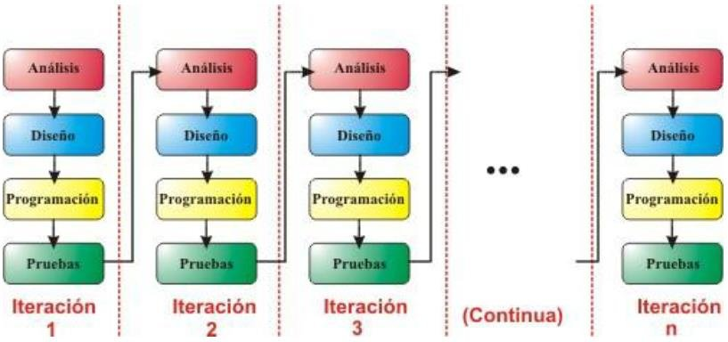

Relación entre Software y Hardware
La relación entre software y hardware es fundamental en el ámbito de los sistemas informáticos. Ambos elementos son complementarios y trabajan juntos para garantizar el funcionamiento eficaz de cualquier dispositivo computacional.
- Dependencia Mutua: El hardware proporciona los recursos físicos que permiten la ejecución del software, mientras que el software controla el hardware mediante instrucciones específicas.
- Comunicación a través del Sistema Operativo: El sistema operativo actúa como un puente entre hardware y software, gestionando los recursos físicos y permitiendo la interacción entre ambos.
- Ejemplo Práctico: En un teléfono móvil, el hardware incluye componentes como el procesador y la pantalla táctil, mientras que el software permite interactuar con estos elementos para realizar tareas.
- Interdependencia en el Diseño: El diseño del hardware está influenciado por los requisitos del software que ejecutará, como en el caso de aplicaciones que requieren procesamiento gráfico avanzado.
-
Tipos de Software:
- Software de Sistema: Relacionado directamente con el hardware, gestiona operaciones básicas como el sistema operativo.
- Software de Aplicación: Utiliza el hardware a través del sistema operativo para cumplir necesidades específicas del usuario.
- Firmware: Combina software y hardware, controlando funciones básicas del hardware.
- Eficiencia y Optimización: Un software optimizado aprovecha mejor las capacidades del hardware, mientras que un software ineficiente puede limitar el rendimiento.
Ingenieria de Software
La razón de ser de la ingeniería del software radica en abordar de manera estructurada y eficiente los retos asociados con el desarrollo, mantenimiento y gestión de sistemas de software. En esencia, busca garantizar que el software desarrollado sea:
- Calidad: Cumpla con los requerimientos funcionales y no funcionales establecidos.
- Confiable: Reduzca errores y falle con menor frecuencia.
- Mantenible: Pueda adaptarse a cambios futuros de manera eficiente.
- Escalable: Maneje el crecimiento en complejidad, usuarios o datos.
- Eficiente: Use recursos computacionales de forma adecuada.
Modelo en Cascada
El modelo en cascada es un enfoque secuencial donde cada fase debe completarse antes de avanzar a la siguiente. Las fases incluyen:
- Requisitos
- Diseño
- Implementación
- Verificación
- Mantenimiento
Este modelo es ideal para proyectos con requisitos claramente definidos y pocas posibilidades de cambios. Sin embargo, su rigidez lo hace menos adecuado para proyectos donde los requisitos evolucionan con el tiempo.

Modelo Incremental
En este modelo, el desarrollo del software se realiza en incrementos, donde cada ciclo entrega una parte funcional del producto. Las características principales incluyen:
- Mejora continua basada en las necesidades emergentes de los usuarios.
- Entrega más temprana de funcionalidades críticas.
Es útil cuando no se dispone de recursos para implementar todo el proyecto de una vez.
Modelo Evolutivo
El modelo evolutivo adopta un enfoque iterativo, desarrollando versiones iniciales del software que se refinan con retroalimentación constante de los clientes. Los enfoques principales son:
- Desarrollo exploratorio: Trabaja estrechamente con los clientes para evolucionar el sistema según sus necesidades.
- Prototipos desechables: Aclara requisitos mediante prototipos que pueden ser descartados o integrados al sistema final.
Este modelo es flexible y permite una adaptación continua a los requisitos cambiantes, pero puede generar estructuras complejas en proyectos grandes si no se gestiona adecuadamente.

Metodologías RUP y Ágil
RUP (Rational Unified Process)
Es una metodología estructurada e iterativa que divide el desarrollo en cuatro fases:
- Inicio: Define los objetivos del proyecto y establece el alcance.
- Elaboración: Detalla la arquitectura del sistema y los requisitos principales.
- Construcción: Desarrolla y prueba los componentes del sistema.
- Transición: Implementa el sistema en el entorno de producción.
RUP se enfoca en:
- Roles definidos dentro del equipo de desarrollo.
- Gestión de riesgos durante todo el ciclo de vida del proyecto.
- Calidad del software mediante revisiones y pruebas constantes.
Es ideal para proyectos complejos, aunque puede resultar pesado para proyectos pequeños debido a su estructura detallada.
Ágil
Es una metodología flexible e iterativa que prioriza:
- Colaboración: Fomenta el trabajo en equipo y la comunicación constante con los interesados.
- Entrega rápida: Divide el trabajo en ciclos cortos y funcionales llamados sprints.
- Adaptación al cambio: Permite ajustar los requisitos durante el desarrollo.
Ejemplos comunes de metodologías ágiles incluyen:
- Scrum: Se basa en roles específicos (Scrum Master, Product Owner, Equipo de Desarrollo) y reuniones regulares (revisiones, retrospectivas, etc.).
- Kanban: Utiliza un tablero visual para gestionar el flujo de trabajo.
- XP (Extreme Programming): Enfatiza prácticas técnicas como pruebas automáticas y programación en pareja.
Ágil es excelente para proyectos con requisitos cambiantes o cuando la colaboración cercana con el cliente es esencial.